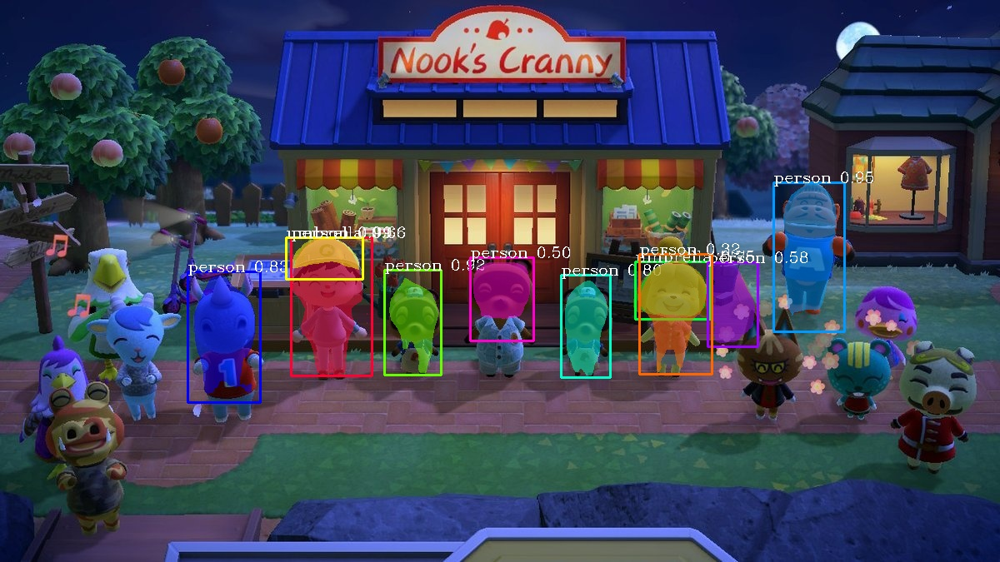

CSMA 213
Professor Nikita Pashenkov
This is a project that aimed to see if image segmentation would work on video game content and explore how it would differ from real life object segmentation and different instances in which it fails. I used Pixellib in order to accomplish this and the library allowed for manipulating the time it takes the computer to make its inferences--anywhere from 1 second to 0.2 seconds. Using this as an additional variable, we could also see how the image segmentation differs looking at the same image at different speeds.